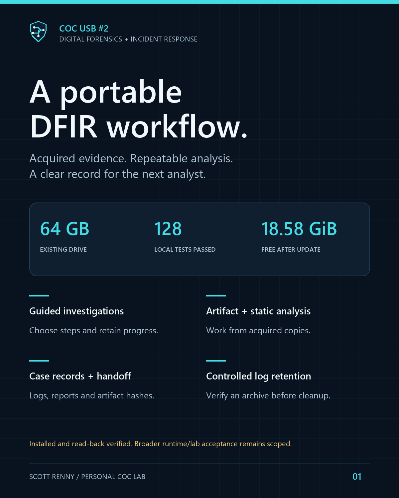
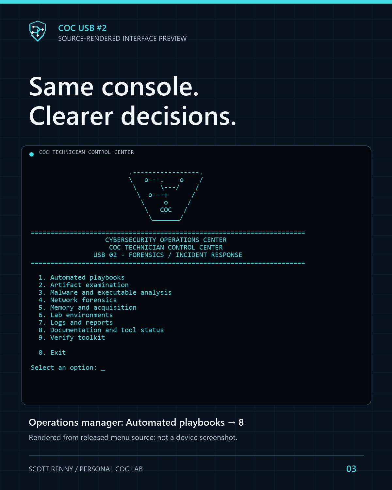

PERSONAL LAB · DIGITAL FORENSICS & INCIDENT RESPONSE
COC USB #2 — a guided DFIR toolkit
An existing 64 GB drive, custom Python and PowerShell workflows, and a clear record from acquired evidence to handoff.
The engineering problem
I wanted a portable investigation toolkit that helped me choose an appropriate workflow, work from acquired copies and leave understandable results. The design had to fit existing media, preserve the familiar USB #1 console, document third-party limitations and make consequential actions explicit.
USB #1 remains the Windows repair/support toolkit. USB #2 focuses on digital forensics, incident response and static malware analysis. It is personal lab engineering; it does not represent professional incident-response employment or universal forensic validation.

What I built
- Fixed acquired-evidence analysis playbooks and a guided incident selector with explicit run, skip and analyst-review decisions.
- A shared case engine for authority references, locks, activity/error records, source hashes, JSON/HTML reporting and final artifact verification.
- Server-log review, bounded Python CArchive extraction, acquired container users and finalized-case correlation, alongside artifact/email/network/static-analysis workflows.
- Harmless practice that asserts known parser results, an offline tool/rule freshness dashboard and verified evidence handoff packets.
- A generated-log manager with exact preview, selected files, a verified full archive, typed confirmation and retained manifest history.

Security and evidence boundaries
Acquired master evidence stays separate; bounded analysis uses working copies and a separate protected output destination. Protection is an operator attestation, not an automatic encryption guarantee. The menu does not run suspicious input, install a monitoring daemon or perform automatic containment. The optional live osquery workflow needs separate explicit authorization and changes host state.
On the private USB, separately obtained tools and offline lab appliances complement the custom orchestration. Zeek, Suricata and Plaso require a separately prepared rootless Linux/Podman analysis host; their packaged images were integrity-checked, while processing and rule-compilation acceptance remain pending. Containers are not presented as a malware detonation sandbox.
Making retention accountable
The log manager can preview, archive, or clean selected generated COC logs. It excludes acquired evidence/system logs, untracked files and unrelated artifacts. Cleanup first verifies a complete original-case archive, then preserves the original manifest and a receipt while revising the active artifact manifest. Archive only leaves the original case unchanged. ZIP archives are not encrypted and file removal is not secure erasure.

What was verified
The staged build passed 128 Python tests, including 25 operations tests. Seven operations cases and five earlier response cases finalized and verified their artifacts. Three controlled guided-decision scenarios tested completed/skipped, failed/review and unattempted states using a mocked step-launch boundary and the real case core. Updater backup, collision/refusal, copy and read-back checks passed.
The owner-run deployment verified the latest 35 changed files. The result recorded 18.58 GiB free; that update did not rehash the complete installed drive. Hash checks, native startup and synthetic fixtures are distinct from real-evidence, full live-query, GUI and offline-lab acceptance. Boot testing was excluded by the owner.
Source and documentation
The public source edition shares original orchestration, selected harmless fixtures, architecture, catalog/readiness information and a sanitized validation record. Vendor executables, VM/container/boot payloads, private logs, device identifiers and the operative release manifest are excluded. It is not a ready-to-run USB image.
Explore the source edition ↗ · Read the engineering journal · USB #1 companion project
← Back to projects